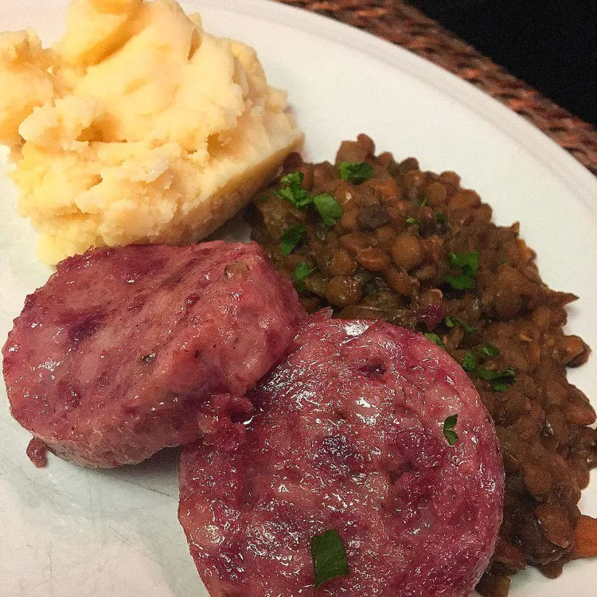

Cotechino con Lenticchie

Even Your In-Laws Will Say "Wow"
A hearty and satisfying dish made with fresh prok, pepper and garlic cloves
Traditionally eaten on New Year's to bring abundance and great fortune
What You'll Need
- 1 pound cotechino
- 1 onion, chopped
- 1 bay leaf
- 7 cups water
- 1 pound dry, green lentils
- 8 whole black peppercorns
- 1 bunch fresh parsley
- 1 large, quartered carrot
- 1 sprig fresh thyme
- 1 tablespoon olive oil
How to Make
- Pierce cotechino
- Place cotechino, onion, peppercorn and thyme in a large pot and bring to a boil. Reduce heat and let simmer for exactly 45 minutes
- Combine lentils, onion, garlic, bay leaf, carrot and salt and pepper, cover with 4 cupos of water then bring to a boil. Reduce heat and let simmer for 45 minutes or until lentils are soft
- Spoon lentils onto serving dish, drizzle with olive oil and slice rounds of cotechino over the top. Sprinkle with fresh parsley and enjoy!
Thank you for reading :)
Return to main page